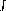

The expressions
are obtained in LaTeX by typing
\frac{du}{dt}
and \frac{d^2 u}{dx^2} respectively. The mathematical
symbol
is produced using \partial. Thus the Heat Equation
is obtained in LaTeX by typing
\[ \frac{\partial u}{\partial t}
= h^2 \left( \frac{\partial^2 u}{\partial x^2}
+ \frac{\partial^2 u}{\partial y^2}
+ \frac{\partial^2 u}{\partial z^2} \right) \]
To obtain mathematical expressions such as
in displayed equations we type
\lim_{x \to +\infty},
\inf_{x > s} and \sup_K respectively. Thus to obtain
(in LaTeX) we type
\[ \lim_{x \to +\infty} \frac{3x^2 +7x^3}{x^2 +5x^4} = 3.\]
To obtain a summation sign such as
we type
\sum_{i=1}^{2n}. Thus
is obtained by typing
\[ \sum_{k=1}^n k^2 = \frac{1}{2} n (n+1).\]
We now discuss how to obtain integrals in mathematical documents. A typical integral is the following:
This is typeset using
The integral sign  is typeset using the control sequence\[ \int_a^b f(x)\,dx.\]
\int, and the limits of integration
(in this case a and b are treated as a
subscript and a superscript on the integral sign.
Most integrals occurring in mathematical documents begin with
an integral sign and contain one or more instances of d
followed by another (Latin or Greek) letter, as in
dx, dy and dt.
To obtain the correct appearance one should put
extra space before the d,
using \,. Thus
and
are obtained by typing
\[ \int_0^{+\infty} x^n e^{-x} \,dx = n!.\]
\[ \int \cos \theta \,d\theta = \sin \theta.\]
\[ \int_{x^2 + y^2 \leq R^2} f(x,y)\,dx\,dy
= \int_{\theta=0}^{2\pi} \int_{r=0}^R
f(r\cos\theta,r\sin\theta) r\,dr\,d\theta.\]
and
\[ \int_0^R \frac{2x\,dx}{1+x^2} = \log(1+R^2).\]
respectively.
In some multiple integrals (i.e., integrals containing more than
one integral sign) one finds that LaTeX puts too much space
between the integral signs. The way to improve the appearance of
of the integral is to use the control sequence \! to
remove a thin strip of unwanted space. Thus, for example, the
multiple integral
is obtained by typing
Had we typed\[ \int_0^1 \! \int_0^1 x^2 y^2\,dx\,dy.\]
we would have obtained\[ \int_0^1 \int_0^1 x^2 y^2\,dx\,dy.\]
A particularly noteworthy example comes when we are typesetting a multiple integral such as
Here we use
\! three times to obtain suitable spacing
between the integral signs. We typeset this integral using
Had we typed\[ \int \!\!\! \int_D f(x,y)\,dx\,dy.\]
we would have obtained\[ \int \int_D f(x,y)\,dx\,dy.\]
The following (reasonably complicated) passage exhibits a number of the features which we have been discussing:
One would typeset this in LaTeX by typing
In non-relativistic wave mechanics, the wave function
$\psi(\mathbf{r},t)$ of a particle satisfies the
\emph{Schr\"{o}dinger Wave Equation}
\[ i\hbar\frac{\partial \psi}{\partial t}
= \frac{-\hbar^2}{2m} \left(
\frac{\partial^2}{\partial x^2}
+ \frac{\partial^2}{\partial y^2}
+ \frac{\partial^2}{\partial z^2}
\right) \psi + V \psi.\]
It is customary to normalize the wave equation by
demanding that
\[ \int \!\!\! \int \!\!\! \int_{\textbf{R}^3}
\left| \psi(\mathbf{r},0) \right|^2\,dx\,dy\,dz = 1.\]
A simple calculation using the Schr\"{o}dinger wave
equation shows that
\[ \frac{d}{dt} \int \!\!\! \int \!\!\! \int_{\textbf{R}^3}
\left| \psi(\mathbf{r},t) \right|^2\,dx\,dy\,dz = 0,\]
and hence
\[ \int \!\!\! \int \!\!\! \int_{\textbf{R}^3}
\left| \psi(\mathbf{r},t) \right|^2\,dx\,dy\,dz = 1\]
for all times~$t$. If we normalize the wave function in this
way then, for any (measurable) subset~$V$ of $\textbf{R}^3$
and time~$t$,
\[ \int \!\!\! \int \!\!\! \int_V
\left| \psi(\mathbf{r},t) \right|^2\,dx\,dy\,dz\]
represents the probability that the particle is to be found
within the region~$V$ at time~$t$.